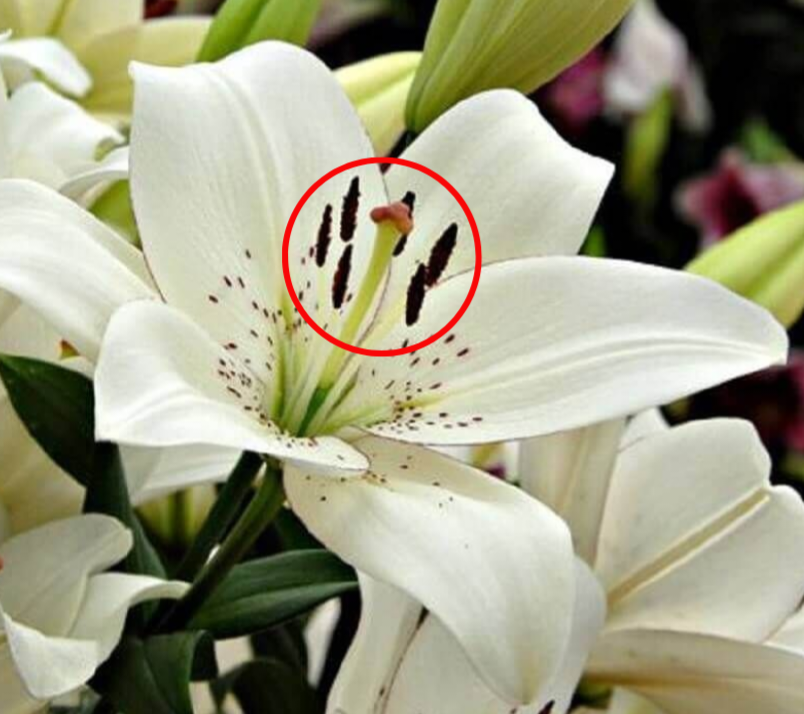
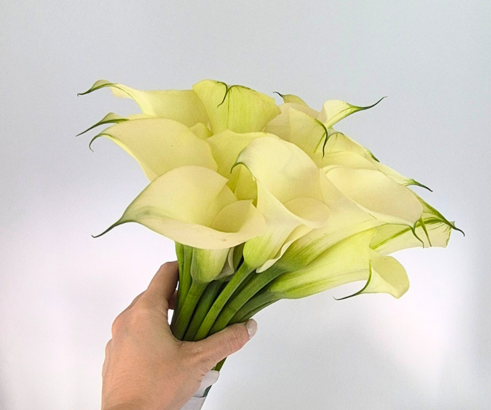
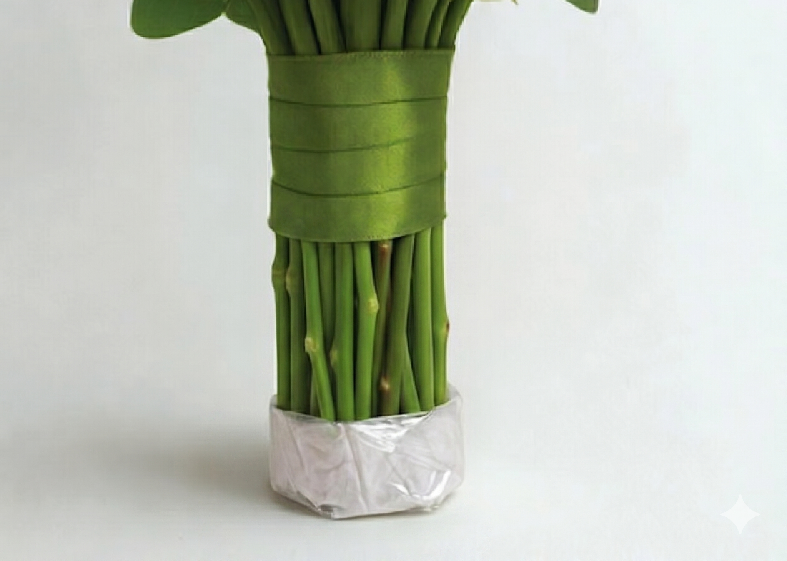

Guia de Cuidados,
Embalagem e Envio
A qualidade do resultado final começa muito antes da chegada ao atelier. Cada detalhe — da hidratação à embalagem — define a beleza da sua eternização.
Mantenha as flores saudáveis desde o momento em que chegam até você.
Mantenha o buquê constantemente em água fresca, de preferência filtrada, com uma colher de chá de açúcar. Ele só sairá da água quando você for usá-lo na cerimônia, e logo após deverá voltar para ela.
Coloque apenas 2 ou 3 dedos de água no vaso, o suficiente para as pontas dos caules ficarem hidratadas. Água em excesso pode encharcar e prejudicar as flores.
Evite tocar nas flores. O contato pode danificar as pétalas e elas ficarão transparentes em contato com a resina.
Continue com os mesmos cuidados ainda na festa e ao chegar em casa.
Corte cerca de 1 a 2 cm dos caules em ângulo de 45 graus. Isso aumenta a absorção de água e nutrientes. Não toque nas flores.
O buquê deverá voltar para a água com a mesma composição anterior. Se houver folhas ou fitas que ficariam submersas, retire-as. Molhe somente a pontinha dos caules.
Vire o buquê de cabeça para baixo e corte os pistilos com cuidado. Se ficarem, eles vão manchar sua flor, suas mãos e sua roupa.

O cabo dessas flores absorve muita umidade. Coloque sempre apenas 2 dedos de água no vaso. Antes de embalar, corte cerca de 4 dedos da ponta do cabo para eliminar a parte mais úmida.

Embale somente na hora de ir ao correio. Quanto menos tempo o buquê ficar dentro da caixa, melhor.
Certifique-se de que o buquê cabe na caixa sem ficar apertado ou amassado. A caixa não pode ser muito grande nem muito pequena.
Retire o buquê da água e seque o excesso com papel toalha. Com outro papel toalha, embale somente a ponta do cabo. Coloque plástico filme em volta para segurar o papel no lugar.

Coloque bolas de papel na caixa e encaixe o cabo do buquê em pé entre elas. Coloque mais bolas até apoiar toda a volta do cabo do buquê e ele ficar firme na caixa. As bolas de papel protegem e seguram o buquê sem abafar as flores.
Coloque algumas bolas de papel, de leve e com muito cuidado, em volta da copa do buquê, somente para proteger as flores de impacto. Não coloque nada em cima das flores e não as aperte.
Feche a caixa e cole etiquetas de "Frágil" com as setas posicionadas corretamente nos quatro lados. Faça a embalagem em casa e leve a caixa já fechada ao correio. Declare o conteúdo como item decorativo.
Infelizmente, recebemos muitos buquês que chegam danificados por embalagem inadequada. Isso não nos impede de seguir com a eternização, mas sua arte não terá flores com pétalas perfeitas e coloridas como você sempre sonhou. Para o melhor resultado, precisamos de flores de qualidade e uma embalagem cuidadosa. Cuide disso com carinho.
Somente papel — utilize papel sulfite, jornal ou kraft. São os únicos indicados.
Bolas, não papel aberto
Não aperte as bolas — vai amassar as flores
Nada em cima das flores
Seu buquê é valioso demais para estragar no envio. Organize-se com antecedência.
No primeiro dia útil após seu casamento, pela manhã. Quanto mais rápido, melhor para a conservação das flores.
Envie por SEDEX e nos encaminhe o código de rastreio imediatamente após a postagem.
Separe a caixa e os materiais de embalagem antes do dia do casamento para evitar correria no dia seguinte.
Imprima as etiquetas de frágil e cole nos 4 lados da caixa. Cole a etiqueta de destinatário em cima e preencha seus dados como remetente.
Baixar Etiquetas (PDF)Arquivo PDF para impressão
Estamos aqui para te orientar em cada etapa. Entre em contato antes de embalar.
Falar com o Atelier